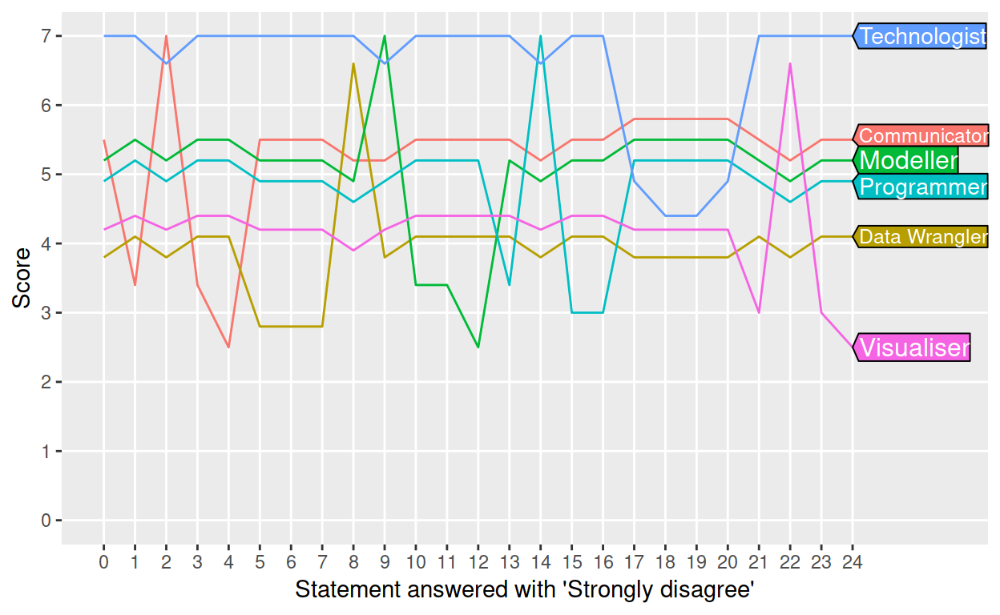
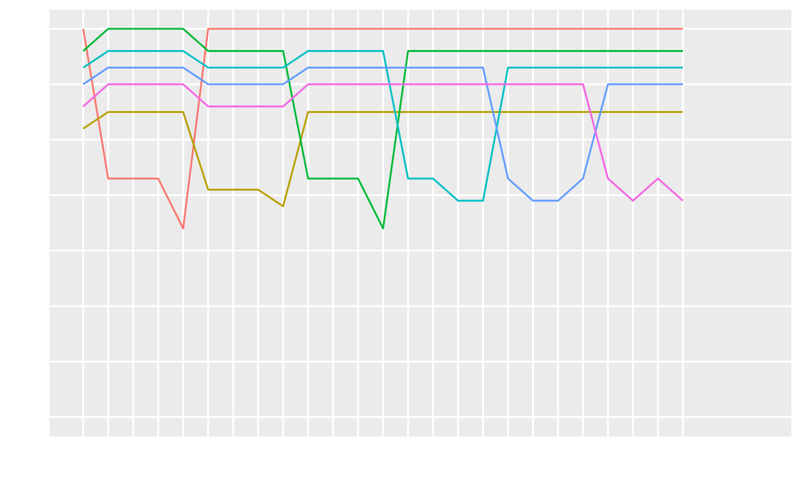
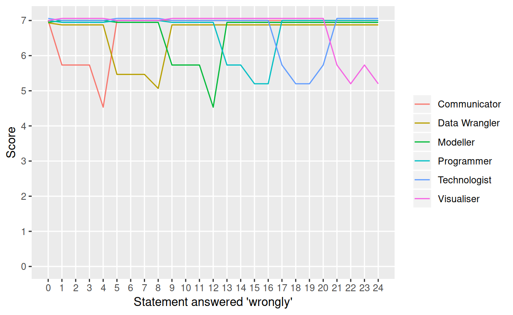
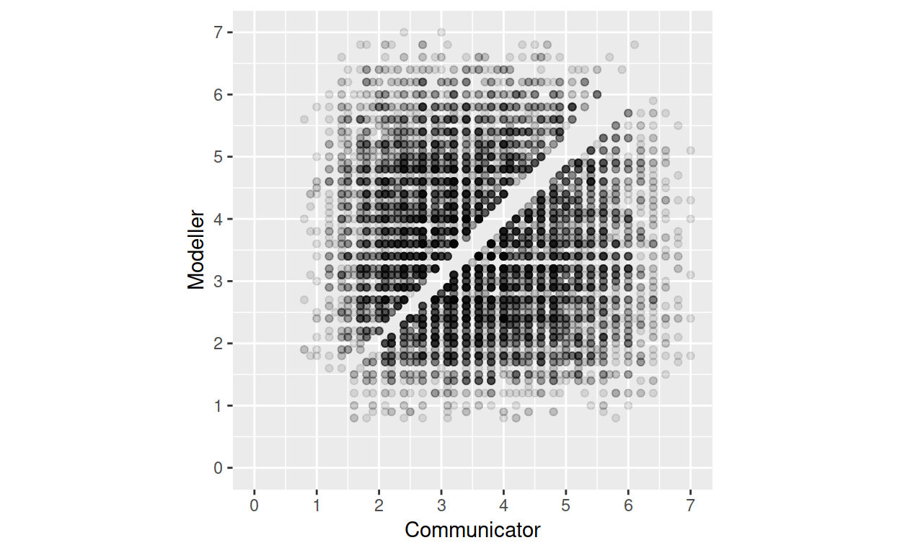
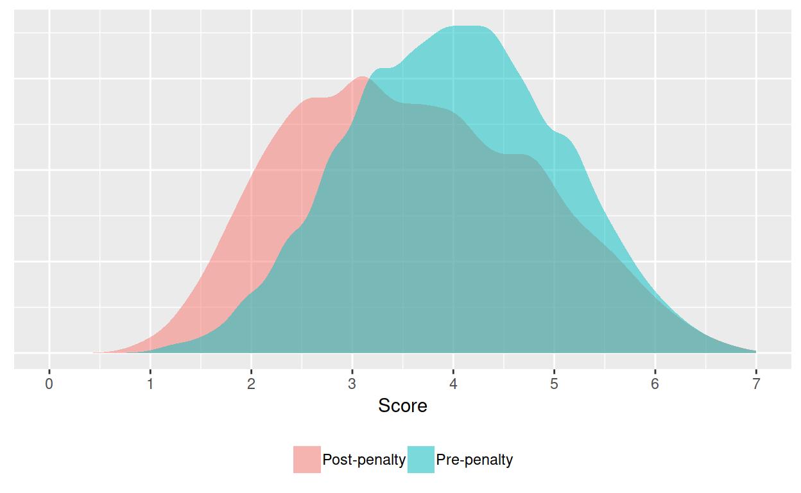

This post reverse-engineers the Mango Solutions Data Science Radar using
- Programming (R)
- Visualisation (ggplot2)
- Data wrangling (dpylr/tidyr/etc.)
- Modelling (lm)
- Technology (embedded V8 javascript)
- Communication (blog)
Why hack? Because getting at the innards also reveals
- What a good score is in each category
- Which statements are most important
- Whether scores are comparable across people
- Whether you should strongly agree with the statement “On average, I spend at least 25% of my time manipulating data into analysis-ready formats”
The radar
Based on Likert-style responses to 24 provocative statements, the Data Science Radar visualises your skills along six axes, the “core attributes of a contemporary ‘Data Scientist’.” It looks like this.

First attempt: Multivariate multiple regression
How can we score better? Hacking the url would be cheating, so instead, let’s use science: hypothesise -> test -> improve. Here are some initial guesses.
- Each of the 24 statements relates to exactly one attribute, i.e. four statements per attribute.
- The Likert values (strongly agree, agree, somewhat agree, etc.) are coded from 1 to 7 (since there are seven points on each axis).
- There is a linear relationship between the coded agreement with the statements, and the attributes.
So something like \[\text{score}_{\text{attribute}} = \frac{1}{4} \sum_{i = 1}^{4} \text{answer}_i\] where \(\text{answer}_i = 1, 2, \cdots, 7\) by encoding “Strongly disagree” as 1, up to “Strongly agree” as 7, including only four relevant answers per attribute. The best-possible set of answers would score 7 on every axis, and the worst set would score 1.
If the hypotheses are correct, then all we need to do to prove them is to record 24 sets of random answers, the resulting scores, and fit a multivariate linear model. We’d expect each score (outcome variable) to have four non-zero coefficients (out of the 24 input variables). Let’s try it.
# The first two aren't random, but they're still linearly independent of the
# others, which is what matters.
random_data <- read_csv(here("data", "radar-random.csv"))
lm1 <- lm(cbind(Communicator, `Data Wrangler`, Modeller,
Programmer, Technologist, Visualiser) ~ ., data = random_data)
lm1
##
## Call:
## lm(formula = cbind(Communicator, `Data Wrangler`, Modeller, Programmer,
## Technologist, Visualiser) ~ ., data = random_data)
##
## Coefficients:
## Communicator Data Wrangler Modeller Programmer
## (Intercept) 2.060e+00 2.422e+00 3.247e+00 6.658e-01
## q01 1.997e-01 -2.507e-02 2.602e-01 -1.103e-01
## q02 -2.571e-01 2.729e-02 -4.514e-01 2.090e-01
## q03 3.087e-01 1.744e-02 -3.471e-01 -1.303e-03
## q04 4.356e-01 8.534e-04 -8.676e-03 -2.346e-02
## q05 -2.524e-01 2.267e-01 8.732e-01 -1.559e-01
## q06 -1.948e-01 1.545e-01 7.016e-01 -7.626e-02
## q07 -7.925e-03 2.075e-01 4.423e-01 -1.089e-01
## q08 8.902e-02 -4.810e-01 -1.246e-02 8.111e-02
## q09 1.901e-01 5.174e-02 -5.260e-01 -9.428e-02
## q10 9.750e-02 -1.248e-02 -2.365e-01 3.181e-02
## q11 -2.099e-01 -5.220e-02 2.943e-01 2.032e-01
## q12 -1.000e-01 1.813e-15 7.000e-01 -1.333e-01
## q13 5.164e-02 2.647e-02 -3.386e-01 2.881e-01
## q14 1.211e-01 -8.162e-02 -3.835e-02 -2.508e-01
## q15 4.971e-03 5.740e-02 -2.581e-01 3.729e-01
## q16 2.450e-01 -6.448e-02 6.447e-02 1.757e-01
## q17 -2.310e-01 8.405e-02 -3.947e-02 1.424e-01
## q18 4.003e-02 -4.045e-02 2.264e-02 -9.453e-02
## q19 5.952e-02 5.815e-02 -6.029e-01 6.573e-02
## q20 -8.766e-02 2.262e-01 -6.807e-01 1.403e-01
## q21 1.903e-01 -3.190e-02 -6.312e-01 1.331e-01
## q22 -1.334e-01 5.980e-02 1.251e-01 8.396e-02
## q23 -5.700e-02 -1.563e-01 5.947e-01 -1.535e-01
## q24 -1.419e-01 4.202e-02 2.188e-01 2.128e-02
## Technologist Visualiser
## (Intercept) -1.331e+00 1.456e+00
## q01 -5.866e-02 -7.103e-02
## q02 1.554e-01 1.281e-01
## q03 5.611e-02 1.978e-01
## q04 -7.130e-02 -4.193e-02
## q05 -1.907e-01 -3.885e-01
## q06 -1.271e-01 -3.897e-01
## q07 -2.015e-01 -2.247e-01
## q08 -5.556e-02 -4.572e-02
## q09 5.506e-02 2.620e-01
## q10 1.557e-01 3.267e-01
## q11 6.801e-02 -1.775e-01
## q12 9.653e-16 -1.000e-01
## q13 -4.010e-03 1.428e-01
## q14 -4.963e-02 7.972e-02
## q15 7.939e-02 1.018e-01
## q16 -2.060e-01 7.158e-03
## q17 3.434e-01 -8.871e-02
## q18 2.958e-01 -2.477e-02
## q19 5.393e-01 2.828e-01
## q20 5.257e-01 3.440e-01
## q21 5.689e-02 4.847e-01
## q22 7.175e-02 -4.788e-01
## q23 -1.894e-01 -6.388e-02
## q24 -4.087e-02 2.361e-01Hopeless! At least one of the assumptions must be wrong, but which one? This time, let’s use our brains instead of stats, and do a visualisation.
Visualisation: Brain not brawn
Since patterns are hard to find among random responses, I answered 24 more surveys systematically, answering “Strongly disagree” to one statement, and “Strongly agree” to all the others, until all 24 statements had been strongly disagreed with. One time, I answered one with “Strongly agree” to every statement, plotting the resulting scores at 0 on the x-axis.

Let’s break this down.
- The maximum score appears to be 7, which ‘Technologist’ got most of the time. If you’re a technologist, you should agree with everything.
- Disagreement with any of the statements drastically affects the score of exactly one attribute, with minor effects on some/all of the others.
- Sometimes disagreement affects attributes for the better (e.g. 2 improves ‘Communicator’). Sometimes it’s really damaging (e.g. 17–20 ruins ‘Technologist’).
- There are no ties between attributes. This is a massive clue.
It’s now easy from this graph to work out the perfect survey responses. For example, we could max-out ‘Communicator’ by agreeing with statements 1, 3, and 4, but disagreeing with statement 2 – which caused a peak in the previous graph.

This is much clearer.
- Each attribute relates to four statements.
- Not only that, but related statements are grouped together (okay, that’s guessable from just doing the survey).
- Not every statement is equally weighted (the trough depths vary within groups).
- Even the statement weighting system varies between questions (the range of trough depths varies between groups).
Penalties
Crucially, it’s now obvious from the parallel movements between 0 and 1, 4 and 5, and 8 and 9, that attributes are penalized by their rank. When statement 1 is strongly disagreed with, ‘Communicator’ has the bottom score, and the others are spread between 7 and five. But when statement 1 is strongly agreed with (position 0 on the x-axis), ‘Communicator’ takes the lead with a score of 7, and the scores of all the others are bumped down a step. This strongly suggests that the scores are penalised by some function of the rank.
Think of it this way: if they’re all equal-first-place, then rank them arbitrarily (zero-based rank, 0 to 5), and then penalise them by, say, subtracting their rank from their score. So say ‘Communicator’ is arbitrarily ranked zero-th among equals (i.e. first place), then ‘Communicator’ still scores 7, But ‘Modeller’, ranked 1 (second place), loses 1 point, and ‘Programmer’, ranked 2 (third place) loses 2 points. This penalisation process guarantees against any ties, but it also obfuscates any straightforward relationship between survey response and pre-penalty scores.
Here’s the penalty function in action. I answered every statement ‘correctly’, except for statement 1, which I answered at every level from “Strongly disagree” to “Strongly agree”. Note the change of axis variables.

As my answers go from “Strongly disagree” up to “Agree” (0 to 6 on the x-axis), the score of ‘Communicator’ gradually increases, as we’d expect. But in the final step, “Strongly agree”, there’s a jump. That’s because ‘Communicator’ is now ranked (abitrarily) in first place, so no penalty is applied, and it gets the full 7 points. At the same time, the other attributes are bumped down.
Hunt the function
We need to remove these penalties before we can investigate the statement/response weightings, but we don’t yet know what exactly the penalty function is, besides being some function of the rank. Using the perfect answers, though (at 6 on the x-axis above), we can get clues to narrow down the options. Since we know that the original pre-penalty score of every attribute ought to have been 7, then by subtracting their final scores from 7, we reveal the size of the penalty.
sort(7 - unlist(perfect_data[1, -1:-24])) # absolute penalty
## Communicator Modeller Programmer Technologist Visualiser
## 0.0 0.4 0.7 1.0 1.4
## Data Wrangler
## 1.8So penalties can be as large as 1.8. That would be a problem for poor-ranking pre-penalty scores below 1.8, which would be pushed below zero. To guarantee positive final scores, the penalty function must scale with the pre-penalty score, i.e. the pre-penalty score must be a coefficient in the function. That restricts us to a couple of basic designs for each attribute’s score.
Either:
\[\text{final score} = \text{pre-penalty} - (\text{pre-penalty} \times \text{factor} \times \text{rank})\] where \(0 \leq \text{factor} < 1/5\) (for positivity).
Or:
\[\text{final score} = \text{factor} \times \frac{\text{pre-penalty}}{\text{rank}}\] where \(0 \leq \text{factor} < 1\) (to ensure a penalty when \(\text{rank} = 1\)).
There is a telling difference between these functions. The first is a straight line, essentially \(y = mx + c\), so that, given equal pre-penalty scores, the differences between final scores are equal. The second is a curve, essentially \(y = m/x\), so that, even given equal pre-penalty scores, the gap between poorly-ranked scores is wider than between the top scores.
Since we have a handy set of equal pre-penalty scores, we can eliminate one of the functions by seeing whether the difference in penalties between ranks is, in fact, constant.
diff(sort(7 - unlist(perfect_data[1, -1:-24]))) # difference in penalties between ranks
## Modeller Programmer Technologist Visualiser Data Wrangler
## 0.4 0.3 0.3 0.4 0.4It’s constant enough for me, so I choose the first model.
We can also check that penalties do, indeed, scale with the pre-penalty scores, by producing a set of worst-possible answers. Pay attention: these are the scores to beat.
## # A tibble: 6 x 2
## attribute score
## <chr> <dbl>
## 1 Communicator 1
## 2 Modeller 0.9
## 3 Programmer 0.9
## 4 Technologist 0.8
## 5 Visualiser 0.8
## 6 Data Wrangler 0.7Not only does this prove the scaling of penalties by pre-penalty score, but it also justifies the coding of ‘agreement’ between 1 and 7, rather than, say, 0 and 6, since we now have a clear minimum pre-penalty score of 1, as well as a maximum of 7 from the set of perfect answers.
If you look carefully, this set of worst-possible scores also hints at the value of the penalty factor. Since the pre-penalty score is 1, and the difference between penalties is constant by design, and the difference between these penalties alternates between 0.1 and 0.0, I strongly suspect a factor of 0.5 and a rounding system that alternates between odds and evens.
Modelling success
But we can nail this down with a linear model, using the two sets of data where we already know the pre-penalty scores, i.e. the best- and worst-possible scores, as well as the ranks, so we can estimate the penalty factor.
A reminder of the model:
\[\text{final score} = \text{pre-penalty} - (\text{pre-penalty} \times \text{factor} \times \text{rank})\] where \(0 \leq \text{factor} < 1/5\) (for positivity).
worst$rank <- 0:5
worst$prepenalty <- 1
best <-
frame_data(~attribute, ~rank, ~score,
"Communicator", 0, 7.0,
"Modeller", 1, 6.6,
"Programmer", 2, 6.3,
"Technologist", 3, 6.0,
"Visualiser", 4, 5.6,
"Data Wrangler", 5, 5.2)
best$prepenalty <- 7
lm(score ~ prepenalty + prepenalty:rank, data = rbind(best, worst))
##
## Call:
## lm(formula = score ~ prepenalty + prepenalty:rank, data = rbind(best,
## worst))
##
## Coefficients:
## (Intercept) prepenalty prepenalty:rank
## -0.02778 1.00349 -0.05029That’ll do! The coefficient on the pre-penalty score is 1, as in our model, and the coefficient on the pre-penalty–rank interaction is -0.05, a nice round number such as a model-builder might choose (and the right sign).
Weighting game
We’re on the home straight. Now that we understand the penalty system, we can go beneath its obfuscations and sort out the statement weights. Here, I invert the penalty function, and apply it to an earlier set of answers that you’ll recognise in the graph.
\[\text{pre-penalty} = \frac{\text{final score}}{1 - (\text{factor} \times \text{rank})}\]

It does the soul good to see the pre-penalty attribute scores restored (bar rounding).
The weight of each statement equals the amount of damage that it can do to the relevant attribute’s score, divided by the total damage done by the other relevant statements.
## type Score damage weight
## 1 Communicator 5.73 1.27 0.20
## 2 Communicator 5.73 1.27 0.20
## 3 Communicator 5.73 1.27 0.20
## 4 Communicator 4.53 2.47 0.39
## 5 Data Wrangler 5.47 1.53 0.23
## 6 Data Wrangler 5.47 1.53 0.23
## 7 Data Wrangler 5.47 1.53 0.23
## 8 Data Wrangler 5.07 1.93 0.30
## 9 Modeller 5.73 1.27 0.20
## 10 Modeller 5.73 1.27 0.20
## 11 Modeller 5.73 1.27 0.20
## 12 Modeller 4.53 2.47 0.39
## 13 Programmer 5.73 1.27 0.21
## 14 Programmer 5.73 1.27 0.21
## 15 Programmer 5.20 1.80 0.29
## 16 Programmer 5.20 1.80 0.29
## 17 Technologist 5.73 1.27 0.21
## 18 Technologist 5.20 1.80 0.29
## 19 Technologist 5.20 1.80 0.29
## 20 Technologist 5.73 1.27 0.21
## 21 Visualiser 5.73 1.27 0.21
## 22 Visualiser 5.20 1.80 0.29
## 23 Visualiser 5.73 1.27 0.21
## 24 Visualiser 5.20 1.80 0.29Being nice fractions, the three systems make perfect sense (allowing yet again for minor rounding): \((\frac{1}{5}\), \(\frac{1}{5}\), \(\frac{1}{5}\), \(\frac{2}{5})\), \((\frac{7}{30}\), \(\frac{7}{30}\), \(\frac{7}{30}\), \(\frac{9}{30})\), and \((\frac{2}{10}\), \(\frac{2}{10}\), \(\frac{3}{10}\), \(\frac{3}{10})\).
And don’t forget to re-write the model to account for the weights.
\[\text{score}_{\text{attribute}} = \sum_{i = 1}^{4} \text{answer}_i \times \text{weight}_i\] where \(\text{weight}_i\) is taken from above.
Implementation and simulation
At last, we can implement the whole thing in R, run it on thousands of random answer-sets, and explore the distributions. Well, almost – it turns out that R and JavaScript handle rounding and floating-point arithmetic differently, so I had to use the V8 package to implement the rounding steps in JavaScript, as the website does. I give more details in a previous post. At least I got to display some ‘Technologist’ skills.
ct <- V8::v8()
roundjs <- function(x, digits) {
sapply(x, function(y) {ct$get(paste0("Number((", sprintf("%.16f", y), ").toFixed(", digits, "))"))})
}The effect of the penalty can be prettily illustrated by a scatterplot of the scores of two attributes. Ties are separated, parting the cloud, slightly above the line \(y = x\).

We can also de-penalise the scores to see the effect of the penalty on the distribution. Pre-penalty scores are distributed as you’d expect, despite slightly uneven weights. Post-penalty scores are skewed to the right, but not so much that you’d notice in casual use.

The magnitude of the penalty depends on the magnitude of the pre-penalty score as well as its rank, introducing a tricky extra dimension to any visualisation. Hexagonal bins work well, coloured according to frequency. Penalties tend to be largest for middling scores, where the rank tends to be poor enough to multiply the penalty factor by a few times, but the magnitude of the score isn’t small enough to scale the penalty down.

The whole point
It turns out that interpreting individual radars should be done more thoughtfully than one might have expected, because
- 5.2 = 7.0 for data-wrangling unicorns with perfect answers.
- Scores aren’t directly comparable between people, unless they’re at the extremes where the penalties exaggerate less.
- The correct answer to the statement “On average, I spend at least 25% of my time manipulating data into analysis-ready formats”, if you want a high ‘Data Wrangler’ score, is Strongly disagree.
And the perfect score?
## # A tibble: 6 x 2
## attribute score
## <chr> <dbl>
## 1 Communicator 7
## 2 Modeller 6.6
## 3 Programmer 6.3
## 4 Technologist 6
## 5 Visualiser 5.6
## 6 Data Wrangler 5.2